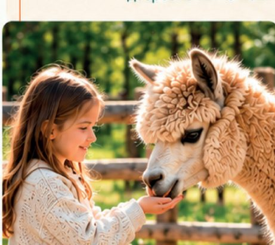
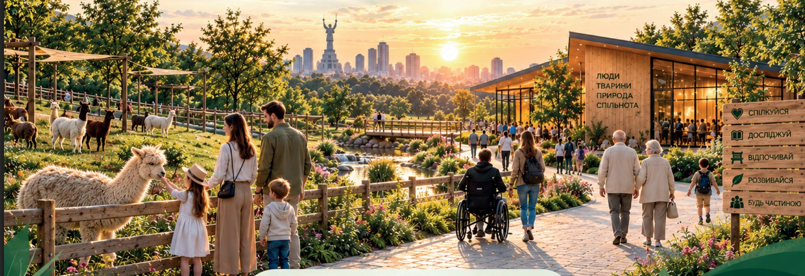
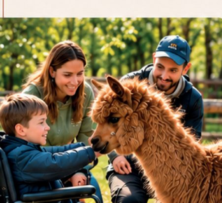
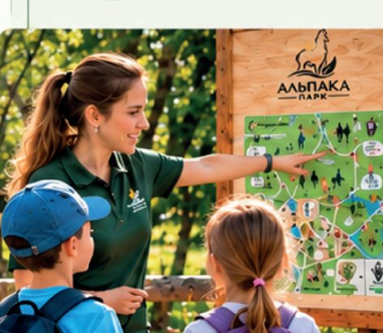
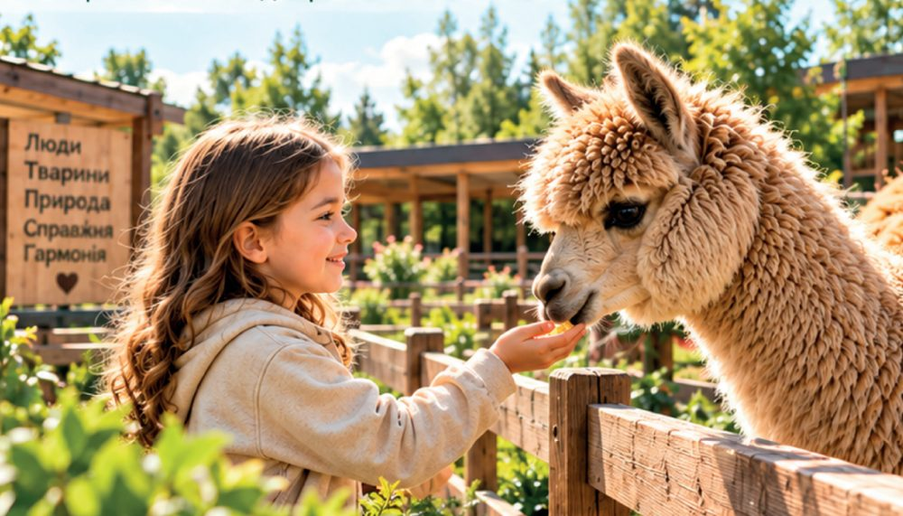
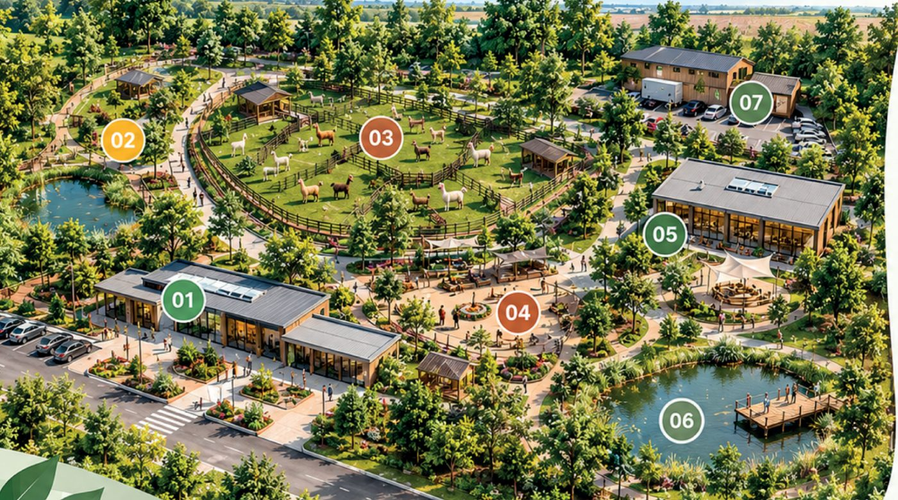
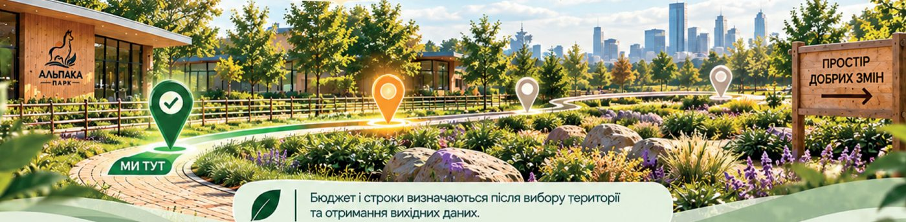

ДІТИ · БАТЬКИ · РОДИНИ
Сімейні формати
Прогулянки, спостереження та добровільна взаємодія з тваринами. Можливість побути разом у природному середовищі.
Майбутній Центр альпакотерапії та соціально-інклюзивної взаємодії. Люди, тварини й природа — у спільному просторі для громади.

ЛЮДИ • ТВАРИНИ • ПРИРОДА • ДОБРОЦентр задумано як сучасний соціально-інклюзивний простір: для спілкування, сімейної взаємодії, освіти та соціальних програм у природному середовищі.
Він має поєднати відкритий міський простір із відповідальною взаємодією з тваринами. Особливу увагу приділяємо людям, яким потрібні додаткові умови участі.
Власний темп, комфортна дистанція та добровільна участь.
Добробут, ветеринарний супровід і право уникати контакту.
Спільні прогулянки, спостереження та відкриття.
Центр створюється для громади. Оберіть свій маршрут, щоб побачити відповідний напрям взаємодії.
Прогулянки, спостереження за тваринами, сімейні й освітні формати. Простір для спілкування та спільного досвіду дітей і батьків.
Програми формуються під конкретну аудиторію, мету й ресурси. Нижче — напрями з концепції, а не відкритий запис.

Прогулянки, спостереження та добровільна взаємодія з тваринами. Можливість побути разом у природному середовищі.

Формати спілкування та участі для людей і груп, яким потрібна додаткова увага до умов взаємодії.

Природа, поведінка тварин, екологія й відповідальність. Спільні формати з профільними організаціями.
Три короткі запитання допоможуть перейти до потрібної інформації або розмови про співпрацю.
Без реєстрації · Без медичної діагностики

Ілюстрація концепціїАльпака створює привід придивитися, дізнатися й обрати власну дистанцію. Контакт може бути поступовим — або залишатися спостереженням.
Альпакотерапія у концепції — соціальний та освітній формат взаємодії. Вона не замінює професійну медичну, психологічну чи реабілітаційну допомогу.
Сім функціональних зон із презентації. Натисніть на номер або назву, щоб дослідити концепцію.

Візуалізація з презентації. Функціональне зонування уточнюється після визначення території та вихідних даних.
Центр має поєднати соціальну функцію, відкритий природний простір і відповідальне утримання тварин.
Враховуємо різні потреби на етапі проєктування. Це заплановані принципи, а не звіт про готову інфраструктуру.
Маршрути без бар’єрів та доступні зони.
Зрозуміла навігація, правила й інформація перед участю.
Можливість обрати комфортний рівень сенсорного навантаження.
Підготовлений персонал і увага до індивідуальних потреб.
Вибір маршруту, формату та рівня участі.
Згідно з презентацією, місію визначили ще до повномасштабної війни. Майбутній Центр продовжує роботу ГО.
Реєстрація ГО «АЛЬПАКА» та початок роботи над концепцією Центру.
Підтримка людей у складний час та нові формати взаємодії.
Заходи, практичний досвід і розширення кола учасників.
Опрацювання території та можливого механізму реалізації Центру.
Вже зроблено: сформовано концепцію, накопичено практичний досвід і партнерські
зв’язки.
За матеріалами презентації; документи мають супроводжувати офіційні
звернення.
Бюджет і строки визначаються після вибору території та отримання вихідних даних для проєктування.
Показники та цільові значення визначатимуться для кожної програми. Наведені напрями — майбутня система оцінювання.
Учасники програм, пільгова й безоплатна участь, доступність форматів.
Охоплення, активність та повторні відвідування.
Зворотний зв’язок, задоволеність і готовність повернутися.
Партнерські програми, повторні партнерства та регулярна звітність.
Місто, бізнес, фонди та профільні установи можуть долучитися в різних ролях.
Концепція передбачає поєднання власних надходжень, партнерських програм, грантів і благодійності.
Детальні CAPEX та OPEX формуються після визначення території й масштабу. Платежі тут не підключені.
Оригінальні матеріали презентації. Відкрийте слайд для перегляду; цифри, міжнародні твердження й статуси на слайдах відтворені як матеріал автора, без незалежної перевірки.
Ні. За презентацією, концепція сформована, а наступний крок — визначення території та правового механізму реалізації. Програми й інфраструктура описані як майбутня модель.
Організована взаємодія людей з альпаками та природним середовищем як додатковий соціальний і освітній формат. Вона не замінює професійну медичну, психологічну або реабілітаційну допомогу.
Ні. Передбачено можливість спостерігати, обрати комфортну дистанцію та відмовитися від дотику. Межі людини й тварини — основа безпечної взаємодії.
У презентації пропонується спільно опрацювати можливі варіанти території, правовий механізм використання й координацію з профільними структурами. Концепція, організація роботи, партнерства та залучення ресурсів — напрями відповідальності ГО.
У робочій версії сайту це буде запит команді проєкту. Зараз форма демонстраційна: показує шлях заявки, але не надсилає дані. Платіжні реквізити та приймання внесків не підключені.

Наступний крок — від концепції до спільних рішень.